Quantile-Quantile plot, Quantile-Normal plot, Tukey mean-difference plot, and symmetry Quantile-Quantile plot
Source:R/eda_qq.R
eda_qq.Rdeda_qq Generates an empirical, Normal,
symmetry or Tukey mean-difference plot
Usage
eda_qq(
x,
y = NULL,
fac = NULL,
norm = FALSE,
sym = FALSE,
p = 1L,
tukey = FALSE,
md = FALSE,
q.type = 5,
fx = NULL,
fy = NULL,
plot = TRUE,
show.par = TRUE,
grey = 0.6,
pch = 21,
p.col = "grey50",
p.fill = "grey80",
size = 0.8,
alpha = 0.8,
med = TRUE,
q = TRUE,
tails = FALSE,
inner = 0.75,
tail.pch = 21,
tail.p.col = "grey70",
tail.p.fill = NULL,
switch = FALSE,
xlab = NULL,
ylab = NULL,
title = NULL,
t.size = 1.2,
...
)Arguments
- x
Vector for first variable, or a dataframe.
- y
Vector for second variable, or column defining the continuous variable if
xis a dataframe. Ignored ifxis a vector and eithernorm=TRUEorsym=TRUE.- fac
Column defining the categorical variable if
xis a dataframe. Ignored ifxis a vector and eithernorm=TRUEorsym=TRUE.- norm
Boolean determining if a Normal QQ plot is to be generated.
- sym
Boolean determining if a symmetry QQ plot is to be generated.
- p
Power transformation to apply to continuous variable(s).
- tukey
Boolean determining if a Tukey transformation should be adopted (FALSE adopts a Box-Cox transformation).
- md
Boolean determining if Tukey mean-difference plot should be generated.
- q.type
An integer between 1 and 9 selecting one of the nine quantile algorithms. (See
quantiletile function).- fx
Formula to apply to x variable before pairing up with y. This is computed after any transformation is applied to the x variable.
- fy
Formula to apply to y variable before pairing up with x. This is computed after any transformation is applied to the y variable.
- plot
Boolean determining if plot should be generated.
- show.par
Boolean determining if parameters such as power transformation or formula should be displayed.
- grey
Grey level to apply to plot elements (0 to 1 with 1 = black).
- pch
Point symbol type.
- p.col
Color for point symbol.
- p.fill
Point fill color passed to
bg(Only used forpchranging from 21-25).- size
Point size (0-1)
- alpha
Point transparency (0 = transparent, 1 = opaque). Only applicable if
rgb()is not used to define point colors.- med
Boolean determining if median lines should be drawn.
- q
Boolean determining if
innerdata region should be shaded.- tails
Boolean determining if points outside of the
innerregion should be symbolized differently. Tail-end points are symbolized via thetail.pch,tail.p.colandtail.p.fillarguments.- inner
Fraction of the data considered as "mid values". Defaults to 75%. Used to define shaded region boundaries,
q, or to identify which of the tail-end points are to be symbolized differently,tails.- tail.pch
Tail-end point symbol type (See
tails).- tail.p.col
Tail-end color for point symbol (See
tails).- tail.p.fill
Tail-end point fill color passed to
bg(Only used fortail.pchranging from 21-25).- switch
Boolean determining if the axes should be swapped in an empirical QQ plot. Only applies to dataframe input. Ignored if vectors are passed to the function or if
sym=TRUEor ifnorm=TRUE- xlab
X label for output plot. Ignored if
xis a dataframe.- ylab
Y label for output plot. Ignored if
xis a dataframe.- title
Title to add to plot.
- t.size
Title size.
- ...
Not used
Value
Returns a list with the following components:
data: Dataframe with inputxandyvalues. May be interpolated to smallest quantile batch. Values will reflect power transformation defined inp.p: Re-expression applied to original values.fx: Formula applied to x variable.fy: Formula applied to y variable.
Details
When the function is used to generate an empirical QQ plot, the plot
will highlight the inner 75% of the data via a shaded region for both x
and y variables. The inner range can be changed via the inner
argument. Its purpose is to prevent tail-end values from disproportionately
biasing our interpretation of the distributions. If the shaded regions are
too distracting, you can opt to have the tail-end points symbolized differently
by setting tails = TRUE and q = FALSE. The inner value
has no impact in the computation of the quantile values.
The middle dashed line represents each batch's median value.
Console output prints the suggested multiplicative and additive offsets.
See the QQ plot vignette for an introduction on its use and interpretation.
The function can generate a Normal QQ plot when the
norm argument is set to TRUE.
Note that for the Normal QQ plot, the "suggested offsets" output is
disabled, nor can you generate an M-D version of the Normal QQ plot.
Also note that the formula argument is ignored in this mode.
The function can be used to generate a symmetry QQ plot when the
sym argument is set to TRUE. This plot helps assess the
symmetry of a variable by splitting it into two halves, upper and lower,
using the batch's median as the cutoff point. The values for each half are
the distances of each observation to the median value in x's units.
The distance starts at 0 in the bottom-left corner of the plot. The shaded
region inner, will be measured from the origin given that the
batch's center of mass is at 0. Power transformations can be applied to
x but any formula passed via fx or fy is ignored.
This plot is inspired from the symmetry plot described by Chambers et al.
in section 2.8 of their book (see reference).
References
John M. Chambers, William S. Cleveland, Beat Kleiner, Paul A. Tukey. Graphical Methods for Data Analysis (1983)
Examples
# Passing data as a dataframe
singer <- lattice::singer
dat <- singer[singer$voice.part %in% c("Bass 2", "Tenor 1"), ]
eda_qq(dat, height, voice.part)
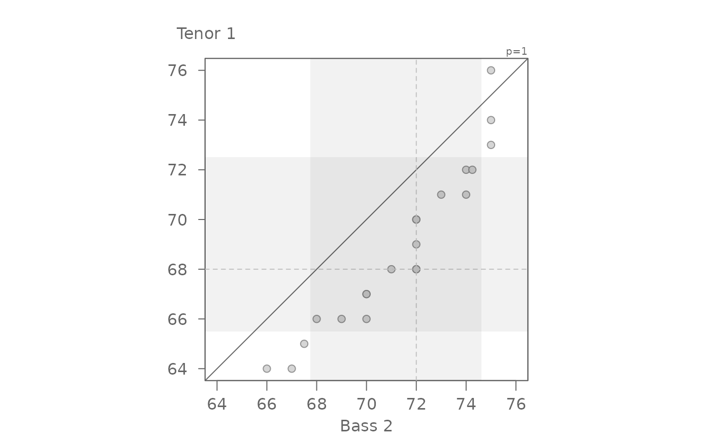
#> [1] "Suggested offsets:y = x * 1.04 + (-5.2163)"
# If the shaded region is too distracting, you can apply a different symbol
# to the tail-end points
eda_qq(dat, height, voice.part, q = FALSE, tails = TRUE)
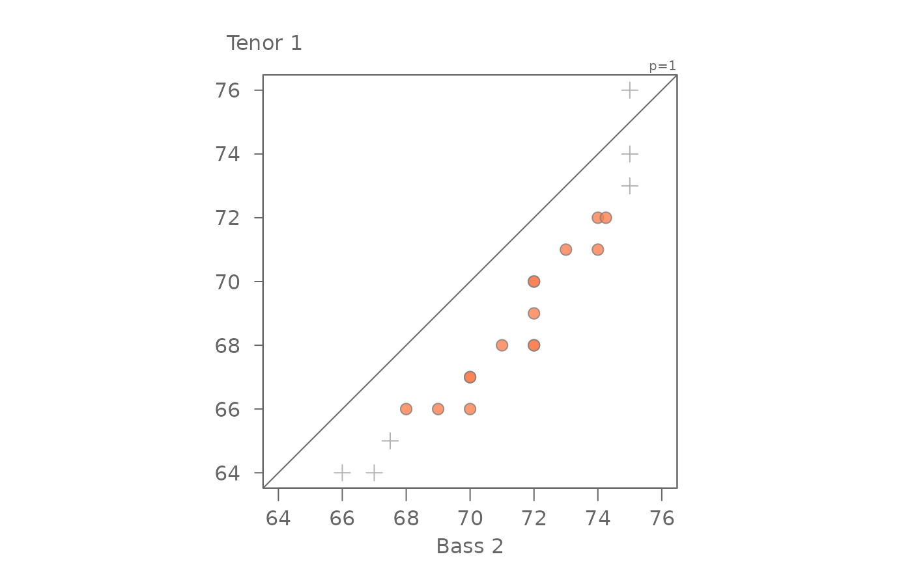
#> [1] "Suggested offsets:y = x * 1.04 + (-5.2163)"
# For a more traditional look to the QQ plot
eda_qq(dat, height, voice.part, med = FALSE, q = FALSE)
#> [1] "Suggested offsets:y = x * 1.04 + (-5.2163)"
# Passing data as two separate vector objects
bass2 <- subset(singer, voice.part == "Bass 2", select = height, drop = TRUE )
tenor1 <- subset(singer, voice.part == "Tenor 1", select = height, drop = TRUE )
eda_qq(bass2, tenor1)
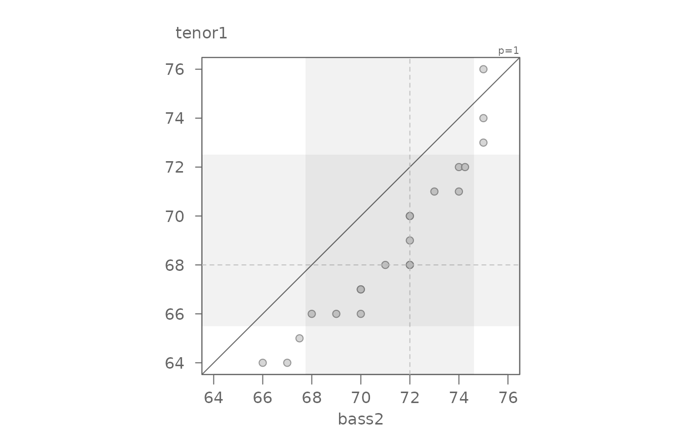
#> [1] "Suggested offsets:y = x * 1.04 + (-5.2163)"
# There seems to be an additive offset of about 2 inches. By subtracting 2
# from the x variable, we should have points line up with the x=y line
eda_qq(bass2, tenor1, fx = "x - 2")
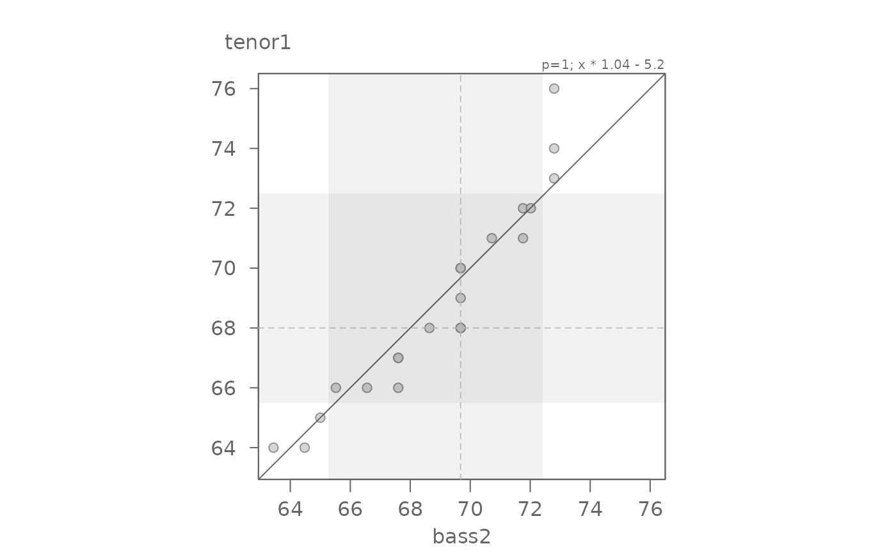
#> [1] "Suggested offsets:y = x * 1.04 + (-5.2163)"
# We can fine-tune by generating the Tukey mean-difference plot
eda_qq(bass2, tenor1, fx = "x - 2", md = TRUE)
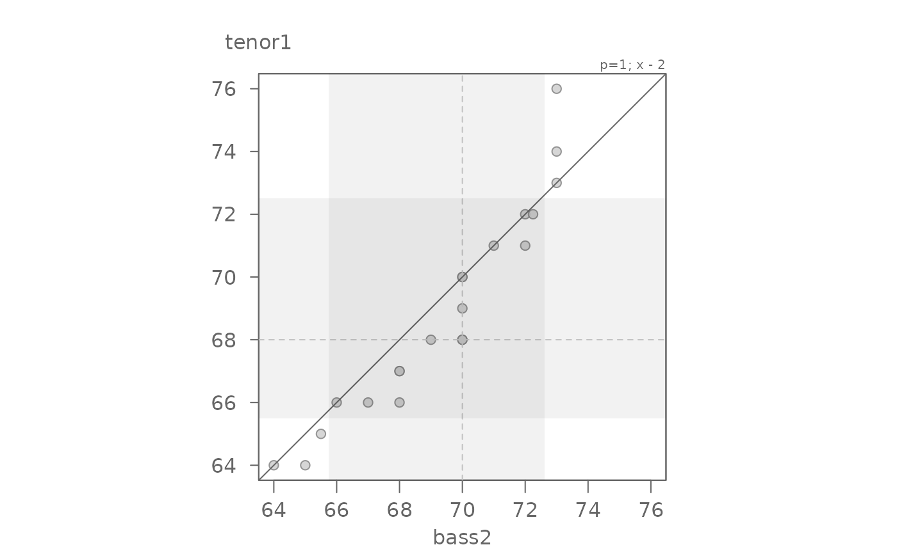
#> [1] "Suggested offsets:y = x * 1.04 + (-5.2163)"
# An offset of another 0.5 inches seems warranted
# We can say that overall, bass2 singers are 2.5 inches taller than tenor1.
# The offset is additive.
eda_qq(bass2, tenor1, fx = "x - 2.5", md = TRUE)
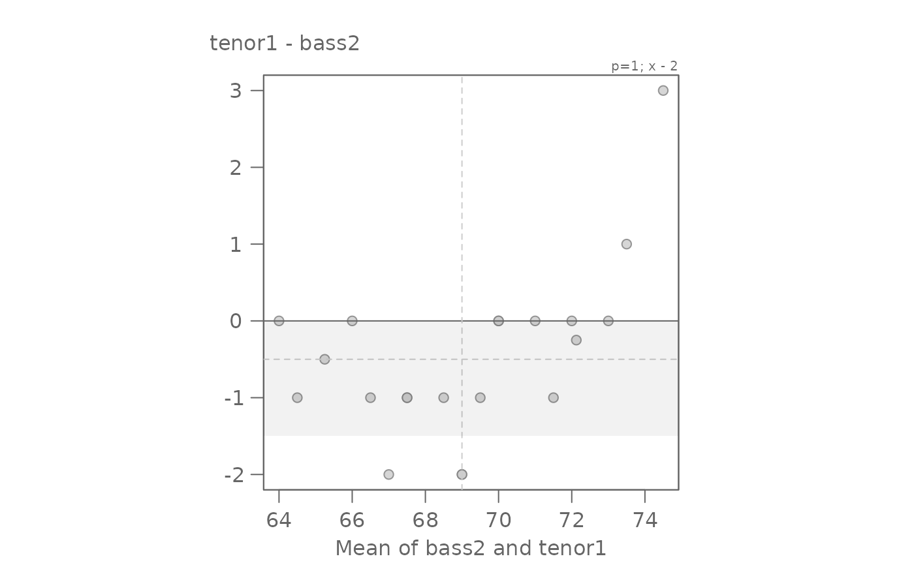
#> [1] "Suggested offsets:y = x * 1.04 + (-5.2163)"
# Note that the "suggested offset" in the console could have also been
# applied to the data (though this formula is a bit more difficult to
# interpret than our simple additive model)
eda_qq(bass2, tenor1, fx = "x * 1.04 -5.2", md = TRUE)
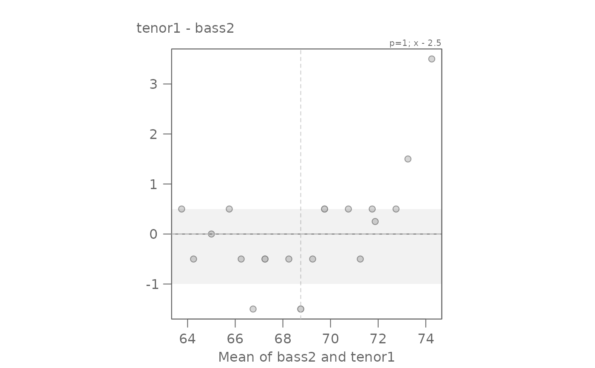
#> [1] "Suggested offsets:y = x * 1.04 + (-5.2163)"
# Example 2: Sepal width
setosa <- subset(iris, Species == "setosa", select = Petal.Width, drop = TRUE)
virginica <- subset(iris, Species == "virginica", select = Petal.Width, drop = TRUE)
eda_qq(setosa, virginica)
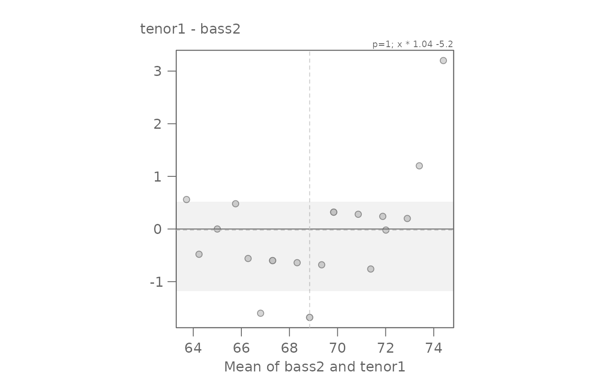
#> [1] "Suggested offsets:y = x * 1.7143 + (1.6286)"
# The points are not completely parallel to the x=y line suggesting a
# multiplicative offset. The slope may be difficult to eyeball. The function
# outputs a suggested slope and intercept. We can start with that
eda_qq(setosa, virginica, fx = "x * 1.7143")
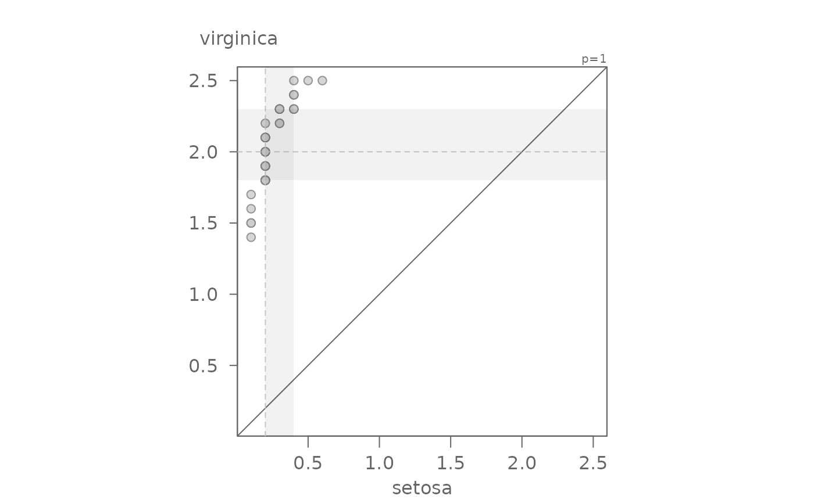
#> [1] "Suggested offsets:y = x * 1.7143 + (1.6286)"
# Now let's add the suggested additive offset.
eda_qq(setosa, virginica, fx = "x * 1.7143 + 1.6286")
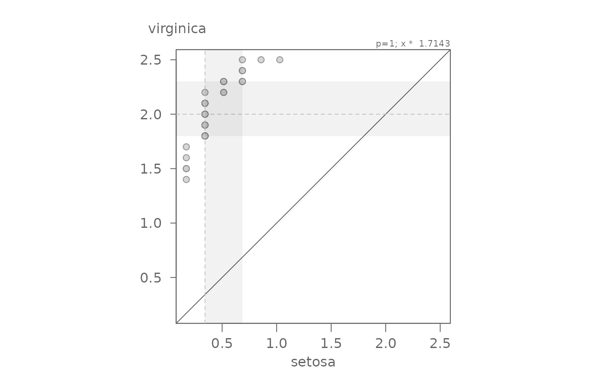
#> [1] "Suggested offsets:y = x * 1.7143 + (1.6286)"
# We can confirm this value via the mean-difference plot
# Overall, we have both a multiplicative and additive offset between the
# species' petal widths.
eda_qq(setosa, virginica, fx = "x * 1.7143 + 1.6286", md = TRUE)
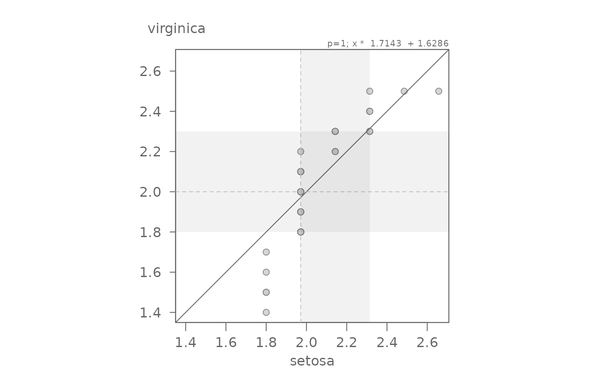
#> [1] "Suggested offsets:y = x * 1.7143 + (1.6286)"
# Function can generate a Normal QQ plot
eda_qq(bass2, norm = TRUE)
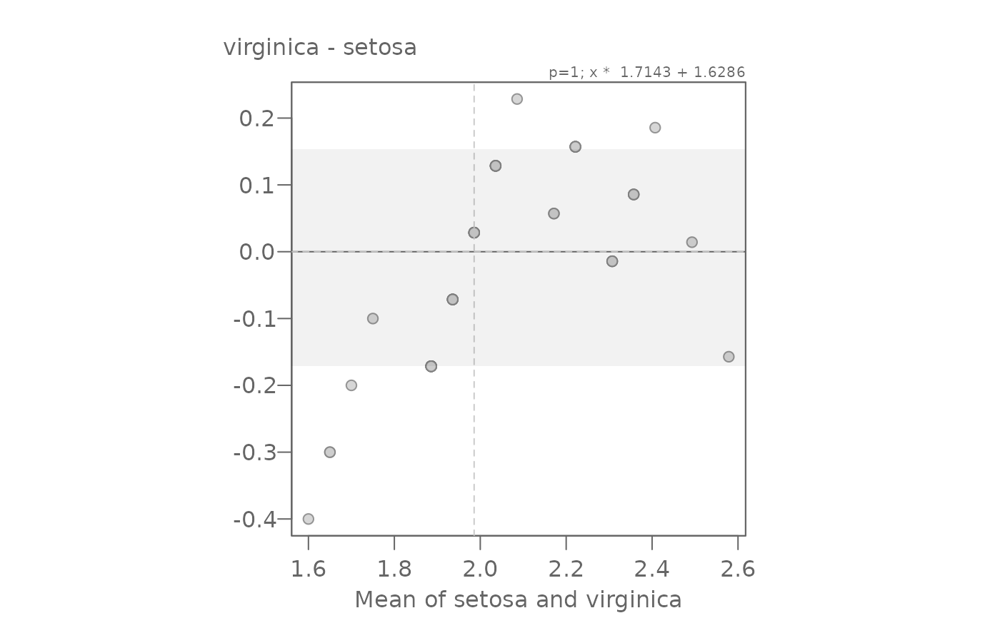
# Function can also generate a symmetry QQ plot
eda_qq(tenor1, sym = TRUE)
#> This is a symmetry QQ plot.
#> Values are distances from each observation to the median value
#> Function arguments (fx and fy) are ignored